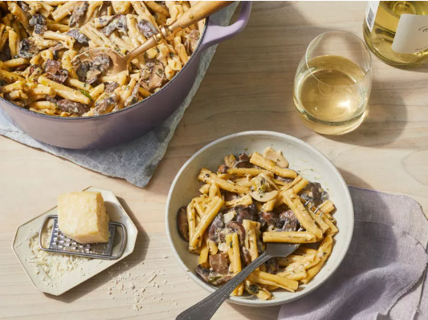

White Wine Pasta with Mushrooms and Leeks

Looking for a scrumptious, fulfilling meal ready in just half an hour, all made in
one pot? Look no further! This pasta with white wine sauce elevates weeknight
cooking with its simplicity and elegance. Made with pantry basics alongside leeks,
mushrooms, and fresh herbs, it's a breeze to whip up. Don't hesitate to crack open
a bottle of wine for dinner—did you know you can freeze leftover wine for cooking?
Simply stash it in the freezer and save it for this recipe.
Opt for any short pasta like penne, casarecce, or pipe rigate—they all work wonders
here. Just check the suggested cooking time on the package; in step four, cook your
pasta three minutes shy of al dente. Want to switch up the flavors? Try tarragon
instead of dill, or experiment with different herb combinations. You can also swap
cremini mushrooms for your preferred variety, or even use rehydrated dried
mushrooms, saving the strained liquid for the recipe's water.
Ingredients
- 3 tablespoons extra-virgin olive oil
- 1 pound cremini mushrooms, trimmed and sliced
- 2 tablespoons unsalted butter
- 2 medium leeks, trimmed and thinly sliced (white and light green parts only),
about 1 1 /2 cups
- 4 medium garlic cloves, thinly sliced
- 2 1/2 teaspoons kosher salt, divided
- 1 pound short pasta, such as penne, casarecce, or pipe rigate
- 3 cups water
- 1 1/3 curps low-sodium vegetable broth
- 2/3 cups dry white wine
- 1/2 cup heavy whipping cream
- 1/2 cup grated Parmigiano-Reggiano cheese (about 2 ounces)
- 2 tablespoons chopped fresh dill
- 2 tablespoons chopped fresh flat-leaf parsley
- 1 teaspoon grated lemon zest plus 1 1/2 teaspoons fresh juice
- 1/2 teaspoon black pepper
Steps
- Gather ingredients.
- Heat oil in a large saucepan over medium-high. Add mushrooms and cook,
stirring often, until all liquid has evaporated, about 12 minutes.
- Add butter, stirring until melted. Add leeks, garlic, and 1 teaspoon of the salt; cook, stirring often,
until leeks are tender, 4 to 5 minutes.
until about 3 minutes short of al dente (check cook time on package).
- Stir in pasta, water, stock, wine, and remaining 1 1/2 teaspoons salt. Increase heat to high
and bring to a boil. Reduce heat to medium and simmer, stirring occasionally, until about 3
minutes short of al dente (check cook time on package).
- Stir in cream and simmer until sauce evenly coats pasta, about 3 minutes. Remove from heat.
Stir in cheese, herbs, lemon zest and juice, and pepper. Divide pasta evenly among shallow bowls
and serve topped with cheese.